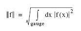

modelflow_v2: Output Arguments
Parent topic: modelflow_v2
This section specifies output files, directories, and settings for the modelflow_v2 command.
Usage
modelflow_v2
{Input Arguments}
[output
[log {logfile | stdout}]
[ddm file] [skipddminlog] [skiptmainlog]
[flare file]
[optical file] [opticalmod dir]
[opticalN file] [opticalmodN dir] (N = 2, 3)
[lithomodel dir]
[cutline file]
[gfout file]
[heightsgfout file]
[interpolated_ddm file]
[stage1resist file]
[finalresist file]
[pwstat]
[mask file] [maskN file] (N = 2, 3)
[etch file]
[setup file | mlfile file]
[topo file]
[unresolved]
[comprehensivetable file]
[srafprintinfo]
[srafprinttable file]
[cache dir]
[marginal integer] [marginalstddev integer]
[marginalabsolute integer] [marginalrelative integer]
[marginalthstab integer] [airesistcutline gauge_id]
[comment string]
]
[ Stage 1 Optimization Run Modes ]
[ Stage 1 Optimization Parameters ]
[ Stage 2 Resist Model Tuning Parameters ]
[ Stage 2 Optimization Parameters ]
[ Stage 3 Etch Model Tuning Options ]
[ Stage 3 Optimization Parameters ]
Arguments
- log {logfile | stdout}
Specifies the name of the log file to hold the results of the modelflow run. (Default = modelflow.log.) If “stdout” is specified, the log info will be written to the stdout rather than to a file.
- ddm file
Specifies output of the DDM model to the disk using the specified file name. This option only has an effect if a DDM model is loaded.
- skipddminlog
Specifies to not write the nominal and final DDM model output to the output file.
- skiptmainlog
Specifies to not write error statistics to the log file for resist computed using thin mask approximation (TMA). If this option is not set, the TMA error statistics are output to the log file, provided that both DDM and HHA models are loaded in the calibration run.
- flare file
Specifies output of a flare model file to disk using the specified file name. This option only has an effect if a flare model file is loaded.
- optical file
Specifies the name for output of the final optical parameter text file. (Default = none.) Cannot be used if contour-based VEB calibration (stage3 inputlayer) is set. This option is ignored if the first optical model is encrypted (contains the skipModelHeader 1 setting).
- opticalmod dir
Specifies the name for output of a full optical model directory based on the final optical parameter settings. (Default = none.)
- optical2 file2
Specifies the name for output of the final second optical parameter text file. (Default = none.) Cannot be used if contour-based VEB calibration (stage3 inputlayer) is set. This option is ignored if the second optical model is encrypted (contains the skipModelHeader 1 setting).
- opticalmod2 dir2
Specifies the name for output of a full second optical model directory based on the final second optical parameter settings. (Default = none.)
- lithomodel dir
Optionally outputs a litho model directory to store the model information. (Default = none.) This option cannot be used if:
A VEB model is present
or
A mask_model is not specified in the model-layer input file. See “Mask Model Format” for more information.
- cutline file
Optionally outputs the cutline data to the specified file. The format of cutline data slightly differs from that used in the log file and reads as: n d I R, where
n is an index varying from 0 to N-1, where N is the length of the cutline array
d is the distance along the cutline (gauge) in microns
I is the aerial image intensity
R is the resist intensity
- gfout file
Optionally outputs gauge data with simulated CD width and space measurements to the disk. (Default = none.) Cannot be set if –gf or –sgf is not specified.
- heightsgfout file
Optionally outputs height super gauge data files with simulated heights to the disk. (Default = none.) Cannot be set if -heightsgf is not specified.
- interpolated_ddm file
Optionally outputs the interpolated DDM models to the disk. It requires at least one DDM group to be loaded. (Default = none.)
If a single DDM group is involved, the associated interpolated DDM gets written to the specified file. If more than one DDM group is involved, the associated interpolated DDM models are written to different files. The file names take the form file_N, with N starting at 0.
- stage1resist file
Specifies the name for output of the final optimized CTR model used in stage1 to optimize threshold and/or optical parameters.
This option should only be used if the threshold argument is used with the optimization parameters in stage1. (Default = none.)
This option cannot be used if stage3 inputlayer (contour-based VEB calibration) is set.
Note:This option was named ctr instead of stage1resist in versions before 2008.4.
- finalresist file
Specifies the name for output of the final (cm1) resist model. This option should only be used if stage 2 resist optimization is specified. (Default = none.)
This option cannot be used if stage3 inputlayer (contour-based VEB calibration) is set.
Note:This option was named cm instead of finalresist in versions before 2008.4.
- pwstat
Instructs the tool to output auxiliary process window error statistics, which includes defocus (in um), dose, RMS error (in nm), and mean error (in nm). These values will be dumped to the log file at each iteration and for each process condition if the number of process conditions is greater than 1.
- etch file
Specifies the name for output of the final etch model used in stage3.
This option should only be used if the optimization parameters in stage3 are specified. (Default = none.)
- setup file
Specifies output of the setup file with the final optimized resist and optical models, which are both inlined (Default = none). This option cannot be used if the -mlfile or -mlstring options are set. This option will be ignored if one of the optical models is encrypted, or if stage3 inputlayer is specified.
- mlfile file
Outputs the setup settings in model-layer file format (Default = none).
In a model-layer file output, the output models are all inlined. The output models are either:
The nominal ones specified in the model-layer input file or string, in the case when the nominal models remain unchanged during the modelflow_v2 run.
The final models with best settings, in the case when the nominal models get optimized or optical models linked to the input super gauge data file are used.
The output mlfile option is not compatible with option –f. Also, this option will be ignored if one of the optical models is encrypted.
- topo file
Outputs the topography (topo) model to disk. This option should be used only when optimizing a loaded topography model.
- unresolved
Specifies to output to the log file the cutlines of all gauges that do not print.
- comprehensivetable file
Specifies to output a copy of the comprehensive data table to the specified file in addition to its default output to the log file. See the section “Format of the Comprehensive Data Table” for details on the table format.
- srafprintinfo
Specifies output of additional SRAF printing information in the final gauge data output. It overwrites the “Other” column with the difference between the empirical and model threshold, and adds “False Positive Error” or “False Negative Error” to the “Comment” column if the simulated CD failed the LT: (CDsim > x) or GT: (CDsim < x) conditions. It also clears any pre-existing comments if the simulated CD does not fail the LT or GT condition check.
- srafprinttable file
Specifies to output a copy of the SRAF printing table data to a file. If both stage1 and stage2 are active, the stage1 SRAF printing table is written to a separate file, file_ctr, and the stage2 table is written to file. This option should only be used when calibrating SRAF printing data. See the section “Format of the SRAF Printing Table Data Output” for details on the table format.
- cache dir
Specifies output of the aerial image grids from the cache to the specified directory on disk. (Default = none.) Does nothing if the input –cacheload option is also specified.
- mask file
Outputs the mask model to disk. This option is meaningful only if a nominal mask model is loaded. (Default = none.) See “Mask Model Format” for more information.
- maskN file
Outputs the second (mask2) or third (mask3) mask models as a text file depending on the value of N. (Default = none.) Cannot be set if a second or third model is not loaded.
- airesistcutline gauge
- Note:
This option was named aicm1cutline in versions previous to 2009.1.
Optionally outputs the aerial image and CM1 intensity profiles for the specified gauge to the log file. This option cannot be used to output multiple gauges.
Marginal Log File Options
The marginal log file options (marginal, marginalstddev, marginalabsolute, marginalrelative, and airesistcutline) require the stage2 option to function. If stage2off is specified, these options are ignored.
Output for these options are described in the section “Marginal Options Log File Output”. (Default: do not output information.)
- marginal integer
Optionally outputs to the log file the specified number of aerial image and CM1 intensity profiles for gauges that show the largest “marginality” values (defined as the largest deviations between aerial image (I) and CM1 (R) intensity profiles):
The norm of a function f(x) is defined as:

- marginalstddev integer
- Specifying this option outputs the specified number (ranges between 1 and 10 are accepted) of aerial image and CM1 intensity profiles for gauges which show the largest standard deviations between the aerial image (I) and CM1 (R) intensity profiles:
where the norm of the function f(x) is defined as:
Gauges are selected and the cutline indexes are sorted based on the standard deviation; the lower the cutline index, the higher the standard deviation value.
- marginalabsolute integer
Optionally outputs the specified number of aerial images and CM1 intensity profiles that show the largest absolute deviations between the measured and simulated CD to the log file. This absolute CD error is computed as |CDmeas - CDsim|
- marginalrelative integer
Optionally outputs the specified number of aerial images and CM1 intensity profiles of gauges that show the largest relative deviations between the measured and simulated CD values to the log file. This relative CD error is computed as |CDmeas/CDsim-1|.
- marginalthstab integer
Optionally outputs the specified number for the gauges with the smallest relative differences between the resist threshold and resist intensity computed at the center of the gauge. It is designed to reveal/filter geometries that may lead to printing extra features or holes.
The threshold stability is calculated using the equation 100% | threshold- resist_intensity| / (Rmax-Rmin).
- comment string
Outputs the specified string to the end of the log file. You can use this option to differentiate between results.
- marginal integer
Optionally outputs to the log file the specified number of aerial image and CM1 intensity profiles for gauges that show the largest “marginality” values (defined as the largest deviations between aerial image (I) and CM1 (R) intensity profiles):
The norm of a function f(x) is defined as:
- marginalstddev integer
- Specifying this option outputs the specified number (ranges between 1 and 10 are accepted) of aerial image and CM1 intensity profiles for gauges which show the largest standard deviations between the aerial image (I) and CM1 (R) intensity profiles:
where the norm of the function f(x) is defined as:
Gauges are selected and the cutline indexes are sorted based on the standard deviation; the lower the cutline index, the higher the standard deviation value.
- marginalabsolute integer
Optionally outputs the specified number of aerial images and CM1 intensity profiles that show the largest absolute deviations between the measured and simulated CD to the log file. This absolute CD error is computed as |CDmeas - CDsim|
- marginalrelative integer
Optionally outputs the specified number of aerial images and CM1 intensity profiles of gauges that show the largest relative deviations between the measured and simulated CD values to the log file. This relative CD error is computed as |CDmeas/CDsim-1|.
- marginalthstab integer
Optionally outputs the specified number for the gauges with the smallest relative differences between the resist threshold and resist intensity computed at the center of the gauge. It is designed to reveal/filter geometries that may lead to printing extra features or holes.
The threshold stability is calculated using the equation 100% | threshold- resist_intensity| / (Rmax-Rmin).
- comment string
Outputs the specified string to the end of the log file. You can use this option to differentiate between results.
Marginal Options Log File Output
Each of the marginal options output cutline (gauge) data and a gauge information record:
- The format of cutline data is as follows: x y d I R.
where:
x and y are absolute layout coordinates in microns.
d is the distance from the cutline (gauge) origin in microns.
I and R are the aerial image and CM1 intensity. The gauges are selected and the cutline indexes are sorted highest value to lowest (the lower the cutline index the higher the value).
- Each cutline has a header line “GAUGE INFO:” that contains associated gauge information using the format:
GAUGE INFO: gauge_index x1 y1 x2 y2 CDmeas CDsim defocus dose valuewhere:
gauge_index is the contiguous gauge index which is an integer between 1 and Ng where Ng is the total number of gauges for all process conditions involved.
x1 y1 x2 y2 are the coordinates of the gauge end points in database units.
defocus and dose are defocus and dose values associated with the gauge.
value is the information requested:
marginal — marginality
marginalstddev — standard deviation
marginalabsolute — absolute CD error
marginalrelative — relative CD error
threshold_stability — threshold percentage
Description
Definitions
CTR — Constant Threshold Resist Model of type CM1.
Nominal optical, resist, and etch models are the initial models specified in the setup file.
optim_set — Defined as one of the optimization expressions as described in Using the Independent, Constrained, and Dependent Optimization Parameters of “modelflow_v2: Stage 1 Optimization Run Modes”.